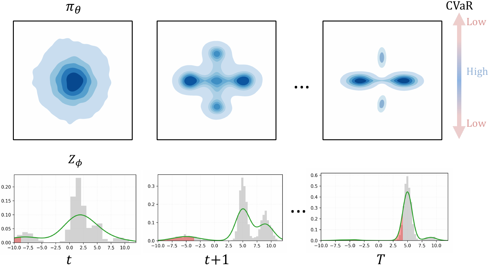
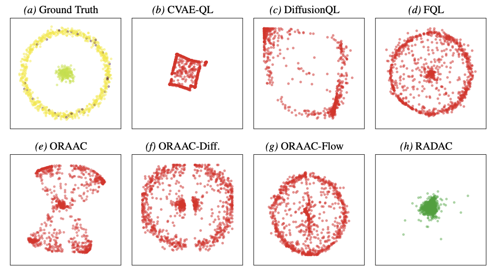
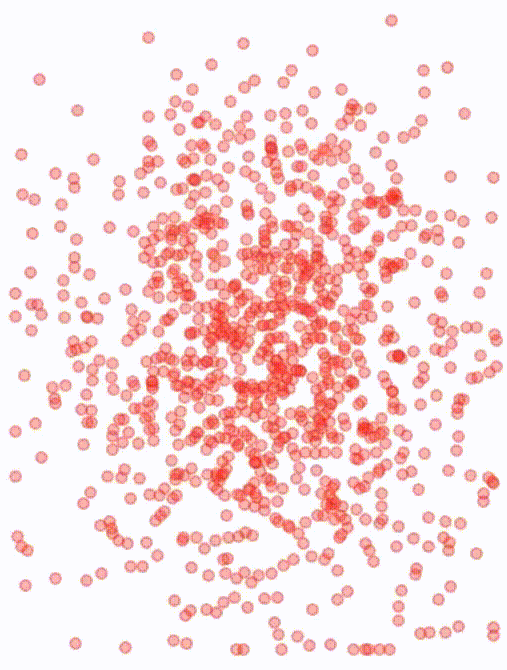
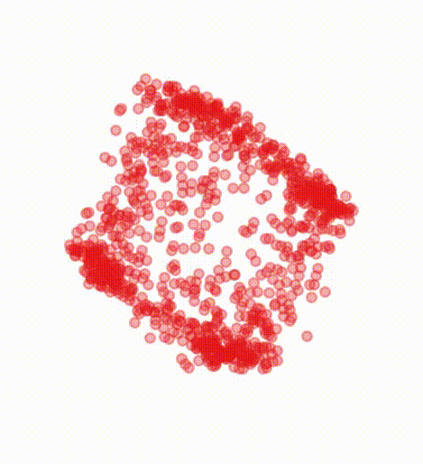
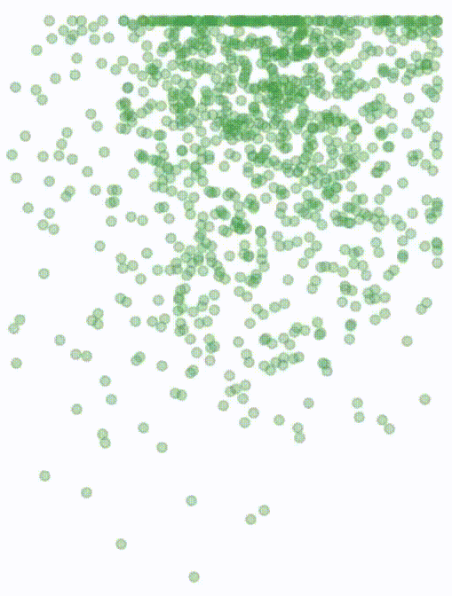
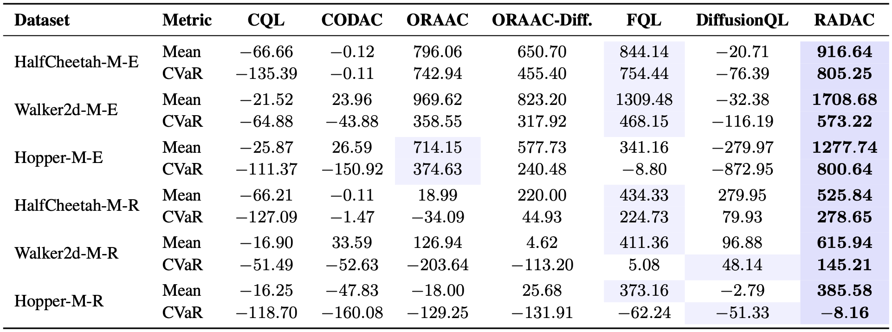
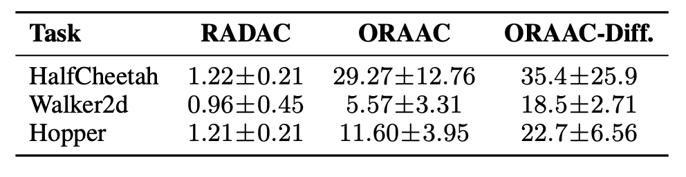

RAMAC: Multimodal Risk-Aware Offline Reinforcement Learning and the Role of Behavior Regularization
Kai Fukazawa·Kunal Mundada·Iman Soltani
University of California, Davis
Expressive Generative Actor
\(\pi_\theta(s,z)\)
Distributional Critic
\(Z_\phi(s,a,\tau)\)

Implementation overview:
RAMAC extends behavior-regularized actor-critic by turning an expressive diffusion/flow
policy into a risk-aware offline RL actor. Instead of optimizing only mean value, RAMAC
uses a distributional critic to expose the lower tail of possible returns. Instantiated
with CVaR to measure the worst 10% of outcomes, this
lower-tail signal guides mode reweighting within the same actor update, yielding a
simple single-policy training objective that preserves data-supported modes while
shifting probability away from catastrophic outcomes.
The Expressiveness-Safety Gap
In safety-critical offline RL, policies should be evaluated not only by mean return,
but also by lower-tail risk. This becomes especially important under stochastic
dynamics, where rare hazards, noisy transitions, or unmodeled uncertainty can drive
deployment failures.
Classical risk-aware offline RL has addressed lower-tail failures and OOD action risk
through mechanisms such as value- or model-based pessimism, explicit uncertainty
estimation, and prior-anchored perturbation.
In parallel, expressive generative policies such as diffusion and flow models have
emerged as powerful tools for representing multimodal action distributions in offline
data.
×Gap 1: Expressive generative policies empirically work well, but their safety mechanism is underexplored.
Diffusion and flow policies have become strong offline RL actors. Yet the behavior
term is often treated as a practical stabilizer, rather than analyzed as an
OOD-suppression mechanism; their role in risk-aware, lower-tail safety objectives
remains comparatively underexplored.
×Gap 2: Risk-awareness can conflict with expressiveness.
Naively combining expressive policies with value- or model-based pessimism can control
tail risk and OOD actions, but may undervalue low-density yet valid modes in
multimodal datasets. Prior-anchored expressive policies can also create structural
OOD leakage when local residual updates leave the data support.
These gaps lead to the core research question:
Can we obtain safety without sacrificing expressiveness?
Method Class
Risk-Awareness
OOD Control
Expressiveness
Expressive Generative Policies
✗
?
✓
Risk-Aware Offline RL
✓
✓
✗
RAMAC (Ours)
✓
✓
✓
Comparison of offline RL paradigms across three desiderata. RAMAC is designed to combine lower-tail risk sensitivity, behavior-based OOD suppression, and multimodal expressiveness within a single generative actor-critic framework.
Solution Idea
The key idea behind RAMAC is simple: take the behavior-regularized actor-critic
pattern that already works well for expressive generative policies, replace the
mean-value critic \(Q\) with a distributional critic, and backpropagate lower-tail
risk signals directly through the diffusion/flow actor.
This turns risk-aware offline RL into a single-policy training problem: the actor
remains behavior-regularized to stay near data support, while the critic's CVaR signal
reweights the same generative policy away from catastrophic modes.
Training the generative actor with a behavior-cloning term can be viewed as controlling
the forward KL from the behavior policy to the deployed policy. Shrinking this forward
KL suppresses probability mass outside the behavior support, yielding a per-state OOD
probability bound.
Key takeaway:
This analysis is not specific to RAMAC. It provides a mathematical explanation for why
expressive generative policies can work well in offline RL: direct behavior
regularization keeps rich policies near data support, while still allowing value or risk
signals to reweight supported modes. Broad empirical evidence for this behavior
regularization principle is provided by
this research.
Note: Why not use a diffusion/flow critic?
Expressive generative critics are an exciting direction: recent work has begun using
flow- or diffusion-style architectures to scale value learning. However, many of these
directions primarily target stability, capacity, or risk-neutral value prediction.
For RAMAC, IQN is a natural first choice because it directly outputs quantiles, making
CVaR easy to compute by averaging the lower tail. A future extension could learn
quantile-conditioned flow or diffusion critics, combining generative critic capacity
with direct access to specific regions of the return distribution.
Experiments
2-D Risky Bandit
Click to see the full results


Epoch 0
DiffusionQL

Epoch 0
ORAAC

Epoch 0
RADAC
A 2-D contextual bandit exposes the core challenge: preserving multimodal behavior
while moving probability away from rare lower-tail hazards. The center mode is safe,
whereas the surrounding ring mode is high-reward but risky.
Left to right: DiffusionQL chases risk-neutral high-value regions, ORAAC can leak through
low-density inter-mode regions, and RADAC shifts mass toward the safe center while
preserving supported behavior.
Stochastic-D4RL Benchmark

Stochastic-D4RL evaluates six D4RL locomotion datasets augmented with rare
heavy-tailed penalties; we report mean return and episodic CVaR0.1
over 5 seeds.
Best results are bolded. RADAC achieves consistently stronger lower-tail returns
across most tasks while preserving competitive mean performance.
OOD Action Rate

We measure state-conditioned OOD action rates on Medium-Expert tasks using a
nearest-neighbor detector with κ=3.
RADAC is consistently lower than ORAAC, supporting the role of behavior regularization
on the deployed policy in suppressing OOD visitation.
Citation
@article{fukazawa2025ramac,
title = {RAMAC: Multimodal Risk-Aware Offline Reinforcement Learning
and the Role of Behavior Regularization},
author = {Fukazawa, Kai and Mundada, Kunal and Soltani, Iman},
journal = {arXiv preprint arXiv:2510.02695},
year = {2025}
}